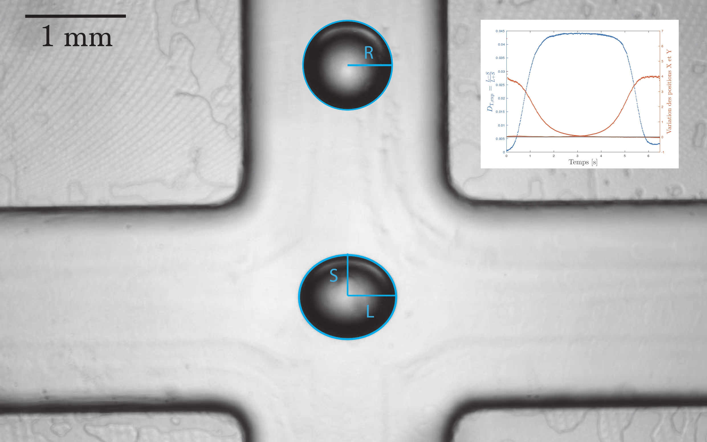
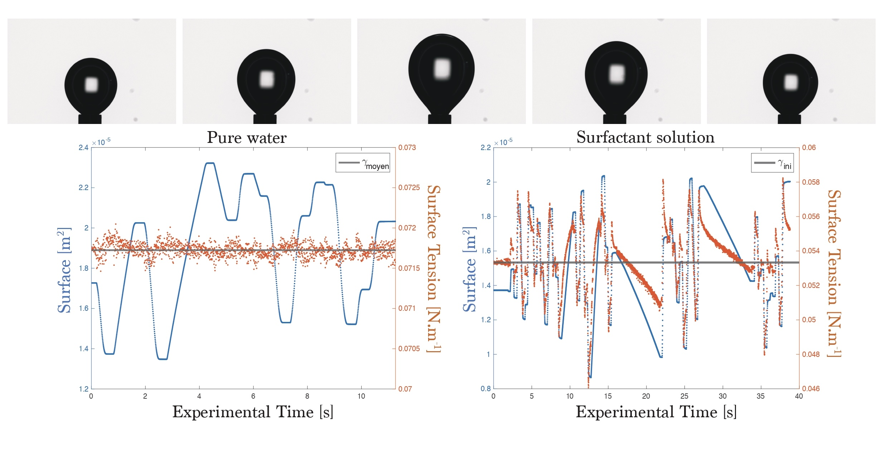
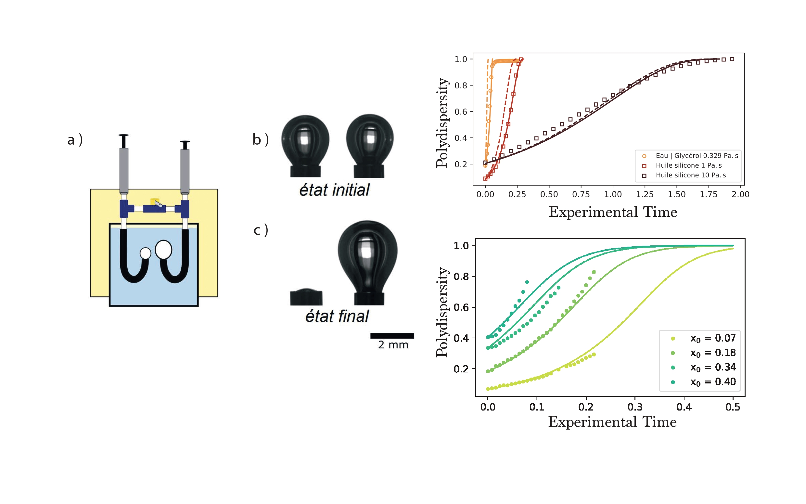

Automatic measurement of droplet deformation under extensional flow
This project aimed to measure the time-dependent deformation of a droplet under flow in microfluidic channel in order to extract these values when steady state is reached. This experiment allows us to prove that surface active agents dynamics around the interface have a key role in the stability of the droplet.
Surface viscoelasticity measurement using random oscillations of a rising bubble
The measurement of liquid/liquid interface mechanical properties is quite complicated and time consuming. This project is a first step toward a one-shot measurement using a well-constructed oscillating signal and a rheological modelization based on fractional integrals.
Laplace drainage of two bubbles

Confrontation between numerical resolution and experiments of the gas flow during the contacting of two bubbles allowed us to predict the drainage dynamic in the case of pure viscous fluid and to measure the interface mechanical properties when surface active agents are present in the solution.